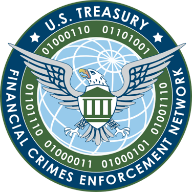

This domain for PM2BTC and related entities has been seized by the United States Secret Service pursuant to a seizure warrant issued by the United States District Court for the Eastern District of Virginia as part of law enforcement operations by the United States Secret Service and the U.S. Attorney's Office for the Eastern District of Virginia.



In addition, PM2BTC has been identified by the United States Department of Treasury's Financial Crimes Enforcement Network (FinCEN) as a "primary money laundering concern in connection with Russian illicit finance, pursuant to section 9714(a) of the Combating Russian Money Laundering Act, as amended.